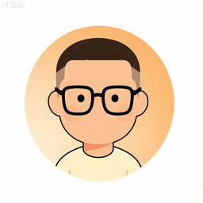

← 返回主站

桌面宠物
让可爱的小宠物陪你度过每一个工作日
v1.0.3
Windows
Python
开源
轻量
下载地址
→
更新日志
→
联系作者
→
功 能
01
走动与待机
静止时自动慢速游走，走到屏幕边缘会识别为障碍并转身
02
跟随鼠标
多只宠物在光标周围环形排开，各自占一个位置
03
右键菜单
微软风格菜单：调整大小、喂饭、聚拢、分散、退出
04
左键拖拽
可直接把宠物拖到任意位置，拖拽时暂停跟随
05
双屏支持
自动识别所有显示器，宠物能在多屏之间自由移动
06
明暗主题
跟随 Windows 系统主题自动切换，也可手动指定
更新日志
✕
联系作者
✕
邮箱
1583398311@163.com
QQ
3821888622（点击复制）
GitHub
@jasonyzk666